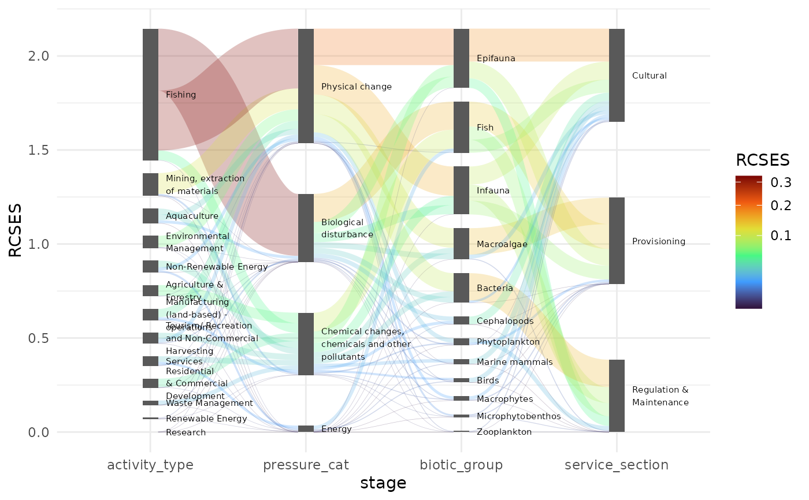

Data indicating a risk resulting from anthropological activities to the marine ecosystem and its capacity to supply services. This data set serves (aggregated from Piet et al. (submitted)) as an example to illustrate the package's features.
Format
ecosystem_services is a data.frame with
3421 rows and 8 columns.
The columns are:
activity_type: Type of activities that pose a riskactivity_realm: Aggregation of activity typespressure_cat: Category of pressures exerted by the activities and eventually pose a risk to the ecosystem.biotic_group: Biotic groups affected by the pressures.biotic_realm: Aggregation of biotic groupsservice_division: Division of ecosystem services that are provided by the biotic groups and affected by the activities.service_section: Aggregation of service divisions.RCSES: 'Risk to Capacity to Supply Ecosystem Services'. A numerical score reflecting the amount of risk for the ecosystem to supply specific services. For more details see Piet et al. (submitted)
This data.frame is in a wide oriented format, typical for most common
applications. Each row in the data.frame represents a unique pathway where each
activity_tpe poses a risk to an ecosystem sevice_division, via a
pressure_cat and biotic_group. Each column either contains information on
a specific stage or the overall quantifier (in this case RCSES).
In its present form it is not suitable to directly plot as a Sankey diagram.
For that purpose it needs to be pivoted with pivot_stages_longer(). Two
different variants are prepared with this function: ecosystem_services_pivot1
and ecosystem_services_pivot2.
The latter pivot contains service_section as an extra feature which can be used
for additional decoration of a Sankey diagram. It is therefore more detailed than
the first alternative.
ecosystem_services_pivot1 is a data.frame with
112 rows and 5
columns. Columns are:
RCSES: See above atecosystem_services.edge_id: Unique numerical identifier for each edge in a Sankey diagram.connector: One of'from'or'to', indicating whether we are looking at the start or the end of an edge.node: A collection ofactivity_realm,pressure_cat,biotic_realmandservice_sectionvalues from theecosystem_servicesdata.frame.stage: Stages in a Sankey diagram formed by the columnsactivity_realm,pressure_cat,biotic_realmandservice_sectionfrom theecosystem_servicesdata.frame.
ecosystem_services_pivot1 is created from ecosystem_services using
pivot_stages_longer() and can be used directly in a Sankey diagram (using
geom_sankeynode() and geom_sankeyedge())
ecosystem_services_pivot2 is a data.frame with
252 rows and 6.
It is the same as ecosystem_services_pivot1 with the exception of a distinct
extra column service_division which allows for more detailed aesthetics in
a Sankey diagram.
References
Piet GJ, Bentley J, Jongbloed RH, Grundlehner A, Tamis JE, De Vries P (submitted) A Cumulative Impact Assessment on the North Sea Capacity to Supply Ecosystem Services. doi:10.2139/ssrn.4450241
Author
Pepijn de Vries, Gerjan Piet, Jacob Bentley, Ruud Jongbloed, Anne Grundlehner, Jacqueline Tamis
Examples
data("ecosystem_services")
library(ggplot2)
if (requireNamespace("stringr")) {
library(stringr)
pos <- position_sankey(v_space = "auto", align = "justify")
pos_text <- position_sankey(v_space = "auto", align = "justify", nudge_x = 0.1)
## A simplified version of the Sankey diagram as published by Piet _et al._ (submitted)
ggplot(ecosystem_services |>
pivot_stages_longer(
c("activity_type", "pressure_cat", "biotic_group", "service_section"),
"RCSES"),
aes(x = stage, y = RCSES, group = node, connector = connector, edge_id = edge_id)) +
geom_sankeyedge(aes(fill = RCSES), position = pos) +
geom_sankeynode(position = pos) +
geom_text(aes(label = str_wrap(node, 20)), position = pos_text, stat = "sankeynode",
hjust = 0, cex = 2) +
scale_fill_viridis_c(option = "turbo", trans = "sqrt") +
theme_minimal()
}
#> Loading required namespace: stringr
